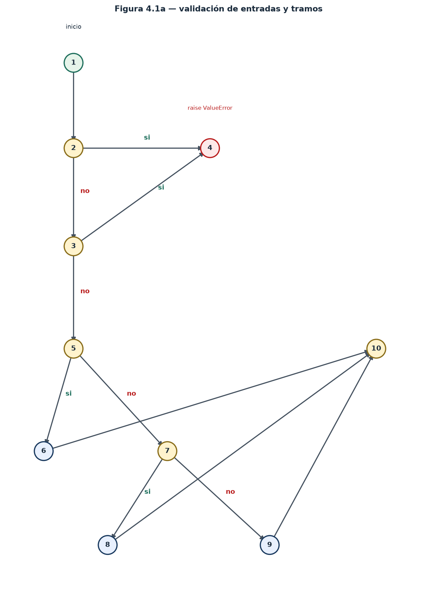

Figura 4.1b — Nodos 10–18: zonas y recargo de fin de semana.
Aquí analicé el código por dentro: grafo de flujo, complejidad ciclomática, caminos independientes y cobertura. Trabajé sobre la versión heredada (v1.0.0), que es la que corresponde a esta parte del enunciado; las líneas citadas son las de envios.py original.
calcEl grafo tiene 30 nodos y 43 aristas. Los nodos predicado (d1–d14) son rombos amarillos; las acciones, rectángulos azules; inicio/fin, verdes; la excepción, roja. Para que quepa legible lo dividí en tres figuras. La leyenda va debajo.


| Nº | Línea v1.0.0 | Nodo | Nº | Línea v1.0.0 | Nodo |
|---|---|---|---|---|---|
| 1 | — | inicio | 16 | 52 | d8 · ¿d > 6? (finde) |
| 2 | 37 (p ≤ 0) | d1 · predicado | 17 | 53 | t = t + S |
| 3 | 37 (p > 50) | d2 · predicado | 18 | 54 | d9 · ¿c == «frecuente»? |
| 4 | 38 | raise ValueError | 19 | 55 | t = t − 5 % |
| 5 | 39 (p <= L1) | d3 · predicado | 20 | 56 | d10 · ¿c == «vip»? |
| 6 | 40 | t = 6000 | 21 | 57 | t = t − V |
| 7 | 41 (p <= L2) | d4 · predicado | 22 | 58 (cup != None) | d11 · predicado |
| 8 | 42 | t = 9000 | 23 | 59 (cup == ENVIO10) | d12 · predicado |
| 9 | 44 | t = 9000 + (p−L2)·800 | 24 | 60 | t = t − 10 % |
| 10 | 45 | d5 · ¿z == urbana? | 25 | 61 (t < 5000) | d13 · predicado |
| 11 | 46 | t = t (sin efecto) | 26 | 62 | t = 5000 |
| 12 | 47 | d6 · ¿z == rural? | 27 | 63 (flag) | d14 · predicado |
| 13 | 48 | t = t + t·RR | 28 | 64 | print("costo:", t) |
| 14 | 49 | d7 · ¿z == nacional? | 29 | 65 | return int(t/100)·100 |
| 15 | 50 | t = t + t·RN | 30 | — | fin |
Flechas entrantes a «raise»: desde d1 (sí) y d2 (sí). Si la excepción salta, el flujo termina en el nodo 30 (fin) sin pasar por el cálculo: el grafo distingue «fin normal» de «fin por excepción» con el mismo nodo terminal. El camino «zona desconocida» (d7 → no, ni urbana ni rural ni nacional) sigue directo al nodo 16 sin aplicar recargo: ese es exactamente el agujero que reporta DEF-05.
| Método | Fórmula | Cálculo | V(G) |
|---|---|---|---|
| 1. Aristas y nodos | V(G) = E − N + 2P | 43 − 30 + 2·1 | 15 |
| 2. Nodos predicado | V(G) = P + 1 | 14 predicados (d1–d14, incluyendo las dos condiciones de la línea 37) + 1 | 15 |
| 3. Regiones | V(G) = caras del grafo conexo | 14 caras acotadas + 1 exterior | 15 |
Que salgan las tres es señal de que el grafo está bien construido. Una complejidad de 15 para una función de 30 líneas dice algo simple: calc hace demasiado. Cada elif amontona una decisión más en la misma función y todas las combinaciones posibles se prueban desde afuera.
Con V(G) = 15 hay 15 caminos linealmente independientes que recorren todas las decisiones al menos una vez. Esto es la base mínima para cubrir la estructura (cobertura de nodos garantizada):
| Camino | Recorrido (resumen) | Qué ejercita | Lo recorre |
|---|---|---|---|
| P1 | 1-2-4 | peso ≤ 0 → excepción | CA-25 (−1 kg), CA-24 (0 kg) |
| P2 | 1-2-3-4 | peso > 50 → excepción | CA-26 (51 kg) |
| P3 | 1-2-3-5-6-10-11-16-18-20-22-25-27-29-30 | tramo 1 · urbana · sin finde · normal · sin cupón | CA-01 |
| P4 | …-5-7-8-10-…-29-30 | tramo 2 | CA-04 |
| P5 | …-5-7-9-10-…-29-30 | sobre L2 (else) | CA-07 |
| P6 | …-10-12-13-…-29-30 | zona rural | CA-09 |
| P7 | …-10-12-14-15-…-29-30 | zona nacional | CA-10 |
| P8 | …-16-17-…-29-30 | recargo de fin de semana | CA-12, CA-13 |
| P9 | …-18-19-…-29-30 | descuento frecuente | CA-14 |
| P10 | …-18-20-21-…-29-30 | descuento VIP | CA-15 |
| P11 | …-22-23-24-…-29-30 | cupón ENVIO10 | CA-16, CA-17, CA-18 |
| P12 | …-22-23-25-…-29-30 | cupón no válido (el heredado lo ignora) | CA-30 |
| P13 | …-22-25-…-29-30 | sin cupón (rama falsa de d11) | CA-05, CA-13 |
| P14 | …-25-26-…-29-30 | mínimo: t < 5000 → t = 5000 | CA-23 |
| P15 | …-27-28-29-30 | flag = True → imprime «costo: …» | Ejecución manual calc(2, 'urbana', 'normal', 2, flag=True) → imprime costo: 6000 y retorna 6000. (El flag se eliminó en v2.0.0.) |
Sentencias. La única línea que ningún caso de la suite ejecuta es la 64 (print("costo:", t)): la suite nunca llama con flag=True. Por tanto, cobertura de sentencias = 28/29 ≈ 96,6 % (pytest-cov con --cov-branch reporta 96 % total, con 1 sentencia sin cubrir y la rama correspondiente parcial). Lo reconfirmé con una ejecución manual: costo: 6000.
Ramas. Las 14 decisiones quedan ejercitadas en ambas direcciones, con una salvedad: el arco flag → print (27 → 28, rama verdadera de d14) no lo toma ningún caso. Tabla de rastreo de ramas:
| Decisión | Rama «v» | Rama «f» |
|---|---|---|
| d1 · peso ≤ 0 | CA-24, CA-25 | CA-01… (todos los demás) |
| d2 · peso > 50 | CA-26 | CA-01… (todos los demás) |
| d3 · p ≤ L1 | CA-01…CA-04 | CA-05… (p ≥ 10) |
| d4 · p ≤ L2 | CA-05, CA-06 | CA-07, CA-08, CA-11, CA-31 |
| d5 · z == urbana | CA-01 | CA-09 |
| d6 · z == rural | CA-09 | CA-10, CA-27 |
| d7 · z == nacional | CA-10 | CA-12, CA-27 |
| d8 · d > 6 | CA-13, CA-31, CA-32 | CA-12 (d = 6, sábado) |
| d9 · c == frecuente | CA-14 | CA-01, CA-15 |
| d10 · c == vip | CA-15 | CA-01, CA-14 |
| d11 · cup != None | CA-16, CA-30 | CA-01, CA-13 |
| d12 · cup == ENVIO10 | CA-16, CA-17, CA-18, CA-20, CA-21, CA-31 | CA-30 |
| d13 · t < 5000 | CA-23 | CA-01 |
| d14 · flag | (ninguno; ejecución manual) | todos los de la suite |
flag era parte del problema (ver DEF-06/ smells, revisión en la Parte 6) y se eliminó en v2.0.0. Tras la refactorización, pytest-cov --cov-branch reporta 100 % de sentencias y ramas (ver Parte 5 y Parte 6).